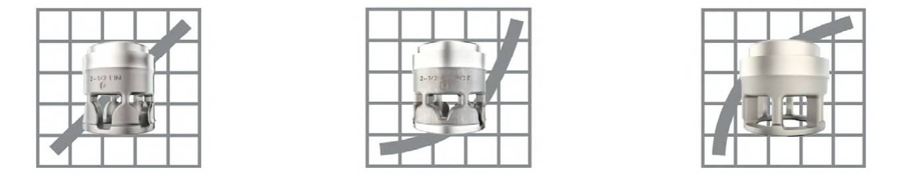

Cage Window Shape Sets the Characteristic

1 2 3- 1Linear cage — window area increases at a constant rate with travel
- 2Equal-percentage cage — narrow near closed, widening rapidly near full-open, for equal PERCENTAGE change per increment
- 3Quick-opening cage — large open area near closed, for maximum flow change early in travel
After Control Valve Handbook, 6th ed., Fig. 1.7 — used directly, own flow arrows retained; markers ours, left to right per the source's own caption order. Component Index: cvh-cmp-cage-types.